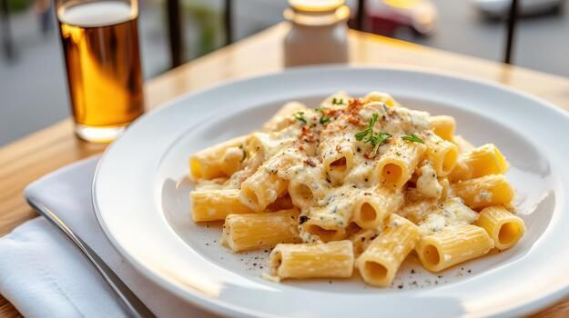

Home
White Sauce Pasta

White Sauce Pasta is a creamy Italian-inspired dish
made with pasta, milk, butter, cheese, and vegetables.
It is comforting, rich, and easy to prepare at home.
Recipe Information
- Preparation Time: 10 minutes
- Cooking Time: 20 minutes
- Total Time: 30 minutes
- Servings: 2 people
- Difficulty: Easy
Ingredients
- 200 grams pasta
- 2 tablespoons butter
- 1 tablespoon all-purpose flour
- 1 1/2 cups milk
- 1/2 capsicum, chopped
- 1/2 cup sweet corn
- 2 tablespoons grated cheese
- 1/2 teaspoon black pepper
- 1/2 teaspoon mixed herbs
- Salt to taste
- 1 teaspoon cooking oil
Instructions
- Boil the pasta: Cook pasta in salted boiling water according to the packet instructions. Drain.
- Cook vegetables: Heat a little oil in a pan and sauté capsicum and corn for 2–3 minutes.
- Melt butter: In another pan, melt butter over low heat.
- Make the base: Add flour and stir for about a minute without browning it.
- Add milk: Pour in milk gradually while whisking to prevent lumps.
- Season the sauce: Add cheese, salt, pepper, and mixed herbs. Stir until creamy.
- Combine: Add cooked pasta and vegetables. Mix well and cook for 2 minutes.
- Serve: Transfer to a plate and serve warm.
Serving Suggestions
Serve with garlic bread, toasted bread, or a fresh vegetable salad.
Tips for Perfect White Sauce Pasta
- Add milk slowly to make a smooth sauce.
- Cook on low heat to avoid burning the sauce.
- Add a splash of milk if the sauce becomes too thick.
Enjoy Your Homemade Pasta!
Creamy and cheesy white sauce pasta is ready to enjoy.